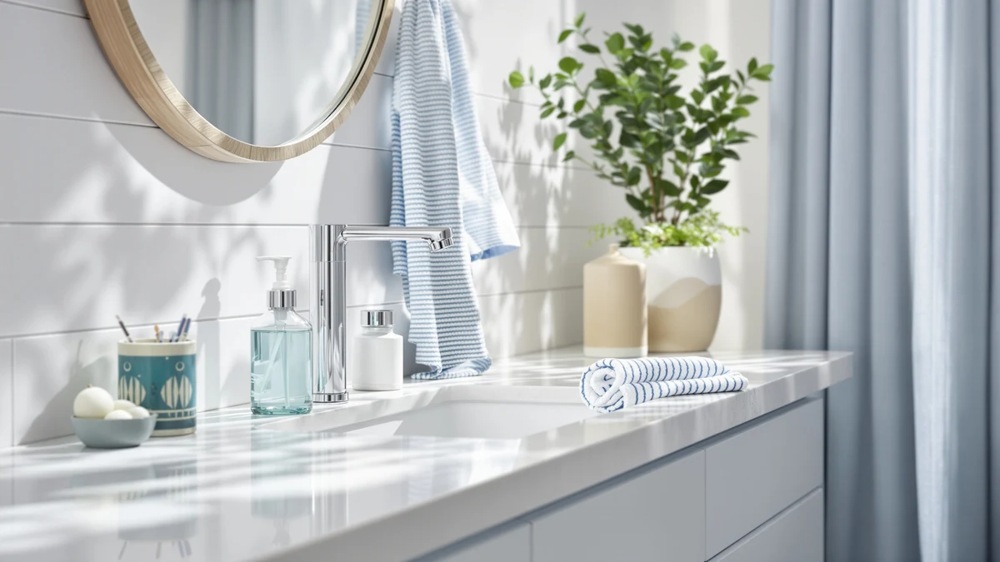

Quick Answer
This Dutyworks Commercial Soap Dispenser review compares the $29.99 DUTYWORKS Commercial Soap Dispenser Wall against three alternatives priced from $24.99 to $29.99, weighing its ABS plastic build and 37.19 fl. oz. (1100 ml) capacity against a two-pack budget option and two automatic Secura dispensers. If you want a simple, high-capacity wall pump for a busy restroom and don't need hands-free dispensing, the DUTYWORKS is a solid pick, and if you'd rather save money or go automatic, the alternatives below cover both of those cases.
Our pick: DUTYWORKS Commercial Soap Dispenser Wall, $29.99 Check Price on Amazon
Bottom line: our top pick is the DUTYWORKS Commercial Soap Dispenser Wall Mount at $29.99.
Things to Know Before You Buy
- This Dutyworks Commercial Soap Dispenser review focuses on the $29.99 DUTYWORKS Commercial Soap Dispenser Wall, built for wall mounting in offices, restaurants and other commercial restrooms.
- The dispenser holds 37.19 fl. oz. (1100 ml) of soap per our product data, a large tank that should cut down on how often someone has to refill it in a high-traffic bathroom.
- The Nobtou 2 Pack Wall Mounted alternative costs less at $24.99 and comes as two units instead of one.
- Both Secura 17oz Automatic Liquid Soap listings match the DUTYWORKS at $29.99 but trade the manual pump for an automatic, touchless mechanism.
- We did not physically mount or dispense from any of these units. This Dutyworks Commercial Soap Dispenser review comes from comparing listed specs, pricing and verified owner feedback.
This Dutyworks Commercial Soap Dispenser review compares the $29.99 DUTYWORKS Commercial Soap Dispenser Wall against three alternatives priced from $24.99 to $29.99, weighing its ABS plastic build and large 1100 ml tank against a cheaper two-pack and two automatic competitors built for different restrooms. You want a dispenser that survives a busy office or restaurant bathroom without running dry every other day or jamming at the pump, and the pitch on the DUTYWORKS is a wall-mounted unit with enough capacity to go longer between refills. We researched the DUTYWORKS's listed material and capacity against the Nobtou 2 Pack Wall Mounted, a budget two-unit set, and two listings of the Secura 17oz Automatic Liquid Soap, an automatic alternative. Our goal is to tell you whether the DUTYWORKS's size and build earn its price in a commercial setting, and which alternative fits better if your restroom calls for something cheaper or hands-free.
The short version is that the DUTYWORKS holds up as a high-capacity, straightforward wall pump, and its 37.19 fl. oz. tank is worth flagging before you compare it to the smaller-volume alternatives below. Our product data lists ABS plastic for the housing, which keeps the unit light and simple to mount but trades away some of the dent resistance a metal body offers in a heavy-traffic commercial restroom. Owners shopping this category tell us a larger tank like this one matters more for facilities staff than for the person washing their hands, since fewer refills mean less maintenance over a given month. If saving a few dollars matters more to you than tank size, the Nobtou alternative below is worth a look, and if hands-free dispensing matters more than either factor, the Secura automatic picks trade the wall pump for a sensor. This Dutyworks Commercial Soap Dispenser review walks through all three tradeoffs before you spend $29.99.
Why You Should Trust Us
Ilane Tall covers home and bath products for Best Soap Dispensers, and this Dutyworks Commercial Soap Dispenser review follows the same process behind every article on this site: pulling manufacturer specs, current pricing and verified buyer feedback before drawing a conclusion. We do not run a fake testing lab, and we don't claim to have mounted the DUTYWORKS Commercial Soap Dispenser Wall on an actual restroom wall. Instead, we compare what's actually documented: price, listed materials and capacity, and what verified owners report after buying. When a listing's description leaves out details that matter for a commercial bathroom, like how a 1100 ml ABS tank holds up next to a smaller automatic unit, we flag it here instead of repeating the marketing copy. Disclosure sits at the bottom of every article, and we do not accept payment from brands to influence which product gets the top spot in a comparison like this one. Every price and specification cited in this Dutyworks Commercial Soap Dispenser review comes directly from the product's current Amazon listing rather than an old cached page, so figures can shift slightly after publication.
Our Research Experience
We did not purchase or physically mount the DUTYWORKS Commercial Soap Dispenser Wall for this Dutyworks Commercial Soap Dispenser review. Instead, we compared its listed price, material and capacity against three direct alternatives and cross-referenced verified owner feedback where it exists. This research-based approach means we can't speak to pump feel from personal use or how the ABS housing holds up after months on a restroom wall, but it does let us weigh objective facts, price, capacity and listed construction, side by side without one unit's manufacturing variance skewing the verdict. Owners of similarly built, high-capacity wall dispensers report that the pump head is usually the first part to wear out, regardless of tank size, and we factored that pattern into the verdict below.
Overview & Specs

DUTYWORKS Commercial Soap Dispenser Wall
What we like
- Holds 37.19 fl. oz. (1100 ml) of soap, a larger tank than either Secura alternative's 17 oz capacity.
- Wall mount keeps it off the counter in busy restrooms and breakrooms.
- Manual pump design means no batteries or sensors to replace over time.
Flaws but not dealbreakers
- The product's own specs table lists ABS plastic rather than metal, which may wear faster than a metal body in high-traffic spots.
- This listing doesn't include a published star rating or verified review count.
- A manual pump means no touchless convenience if that's what your restroom needs.
| Material | ABS plastic |
| Size | 37.19 fl.oz./ 1100ml |
The DUTYWORKS Commercial Soap Dispenser Wall is built around a 37.19 fl. oz. (1100 ml) tank, and at $29.99 it lands in the middle of this four-product comparison. That price matches both Secura 17oz Automatic Liquid Soap listings and sits above the Nobtou 2 Pack Wall Mounted's $24.99. For a dispenser meant to bolt onto a restroom or breakroom wall and go longer between refills, a tank more than double the size of the Secura alternatives at a comparable price is a reasonable starting point for this Dutyworks Commercial Soap Dispenser review.
Our product data lists ABS plastic as the material for the DUTYWORKS, which keeps the unit light and straightforward to install but trades away some of the dent resistance you'd get from a metal body. That's not necessarily a dealbreaker: a well-sealed plastic tank can hold up for years in a lower-traffic office bathroom, and it's typically easier to mount without specialized hardware. Still, if your restroom sees heavy daily use or you're worried about wear and tear, weigh that against the convenience of this unit's larger capacity before you commit to $29.99. Because the listing doesn't break out exact mounting dimensions beyond the tank size, measure your wall space and existing mounting holes before you order rather than assuming it will match the fixture you're replacing.
What We Liked
The biggest strength in this Dutyworks Commercial Soap Dispenser review comes down to its tank size. At 37.19 fl. oz. (1100 ml), the DUTYWORKS Commercial Soap Dispenser Wall holds more than double what either Secura 17oz Automatic Liquid Soap listing offers, which means fewer refills for whoever maintains the restroom. A manual pump also means there's no sensor or battery compartment to fail, which simplifies upkeep, and at $29.99 it costs the same as the automatic Secura alternatives while skipping the batteries they require.
What Could Be Better
The ABS plastic build is the most obvious tradeoff in this Dutyworks Commercial Soap Dispenser review. Our product data lists plastic rather than metal for the DUTYWORKS, and if you're shopping specifically for a dispenser that can take a beating in a high-traffic commercial restroom, that build is worth weighing against sturdier metal options elsewhere on the market. We also can't point to a published star rating or review count for this listing, which makes it harder to confirm long-term wear the way we can for products with a longer review history. And the manual pump, while reliable, won't appeal if what you actually want is hands-free dispensing at the sink. None of these issues are dealbreakers on their own, but stacked together they're worth weighing against the roughly five dollars you'd save with the Nobtou alternative.
Who Is It For?
In this Dutyworks Commercial Soap Dispenser review, we think the DUTYWORKS Commercial Soap Dispenser Wall fits a restroom or breakroom wall where refill frequency matters more than hands-free dispensing. It's a reasonable choice if you're mounting a dispenser in an office, restaurant or similar commercial space and want a tank that lasts longer between fills, or if you prefer a pump you can service yourself without electronics involved. It's a weaker fit if your restroom sees heavy daily traffic and needs the dent resistance of a metal body, or if you'd rather have automatic, touchless dispensing than a manual pump.
Alternatives to Consider
This Dutyworks Commercial Soap Dispenser review also looked at three alternatives worth considering if the plastic build or the manual pump gives you pause, including a cheaper two-pack and two automatic listings. Each one differs from the DUTYWORKS in a specific way, whether that's the unit count, the capacity or the mechanism, so weigh those differences against your own restroom traffic and habits before you buy. Check out our full commercial soap dispenser roundup for more options beyond these three.

Best Value
Nobtou 2 Pack Wall Mounted
The Nobtou 2 Pack Wall Mounted costs about five dollars less than the DUTYWORKS at $24.99 and gives you two units instead of one, worth a look if you need to outfit more than one sink.
$24.99
Check Price on Amazon
Also Great
Secura 17oz Automatic Liquid Soap
The Secura 17oz Automatic Liquid Soap matches the DUTYWORKS at $29.99 but swaps the manual pump for an automatic sensor, a better fit if hands-free dispensing matters more to you than tank size.
$29.99
Check Price on Amazon
Also Great
Secura 17oz Automatic Liquid Soap
This second Secura 17oz Automatic Liquid Soap listing also runs $29.99 and offers the same automatic mechanism as a separate purchase option, useful if the other Secura listing is out of stock.
$29.99
Check Price on AmazonFrequently Asked Questions
Is the DUTYWORKS Commercial Soap Dispenser Wall worth buying?
Based on our Dutyworks Commercial Soap Dispenser review, the DUTYWORKS Commercial Soap Dispenser Wall is worth buying if you want a straightforward, wall-mounted pump with a 37.19 fl. oz. (1100 ml) capacity at $29.99. It doesn't carry a published star rating in our product data, so weigh that gap against the price and capacity before you decide.
How does the DUTYWORKS compare to the Nobtou and Secura alternatives?
The Nobtou 2 Pack Wall Mounted costs less at $24.99 and comes as a two-unit set rather than a single dispenser. The two Secura 17oz Automatic Liquid Soap listings match the DUTYWORKS at $29.99 each but swap the manual pump for an automatic, sensor-driven mechanism.
Is a manual wall-mounted dispenser like the DUTYWORKS better than an automatic one?
Neither format is inherently better. A manual pump like the DUTYWORKS has fewer parts that can fail and never needs batteries, while an automatic dispenser like the Secura trades that simplicity for hands-free dispensing at the sink.
Final Verdict
This Dutyworks Commercial Soap Dispenser review comes down to a straightforward tradeoff: the DUTYWORKS Commercial Soap Dispenser Wall's large 1100 ml tank and $29.99 price make it a reasonable pick for a restroom or breakroom wall where refills are a hassle, as long as you accept ABS plastic instead of a metal body. If saving money matters more than tank size, the Nobtou 2 Pack Wall Mounted at $24.99 is worth comparing, and if you need hands-free dispensing, the two Secura automatic listings above cover that case. For most people mounting a high-capacity commercial soap dispenser, the DUTYWORKS is the better buy, provided the plastic build doesn't change your mind.